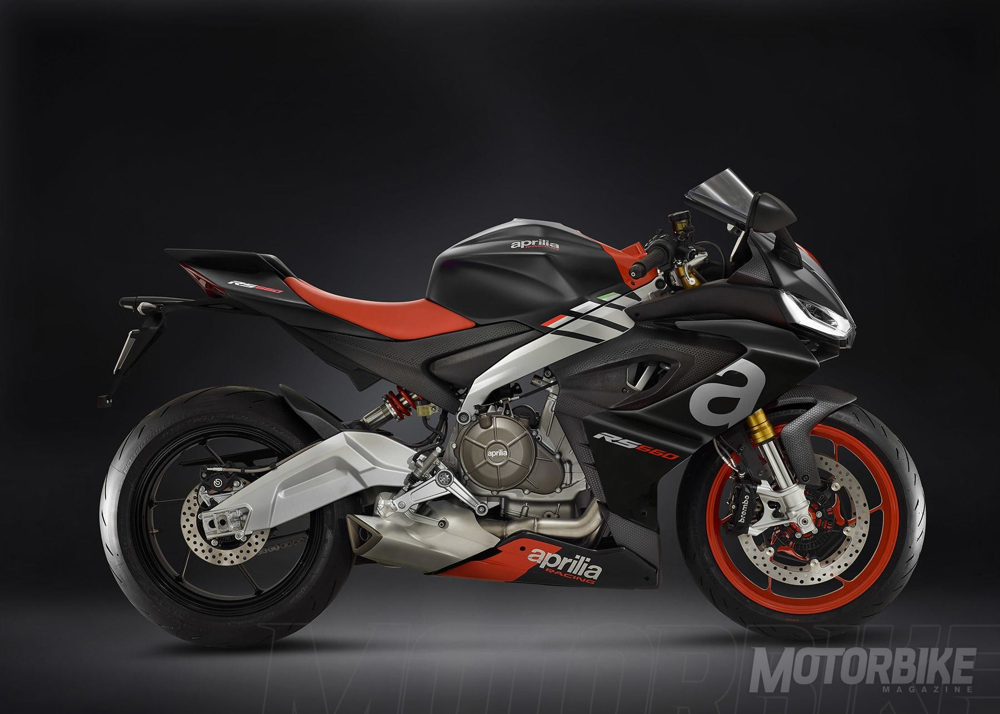
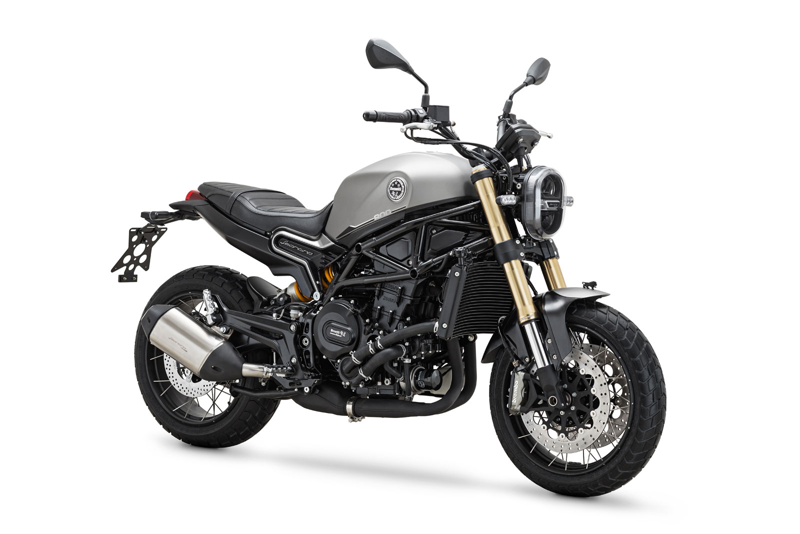
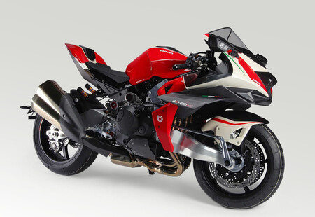
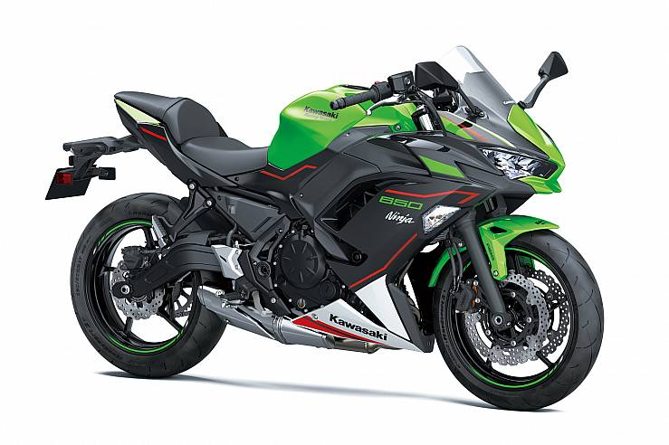
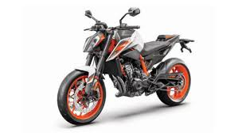
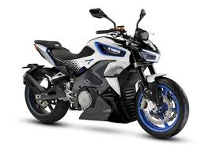
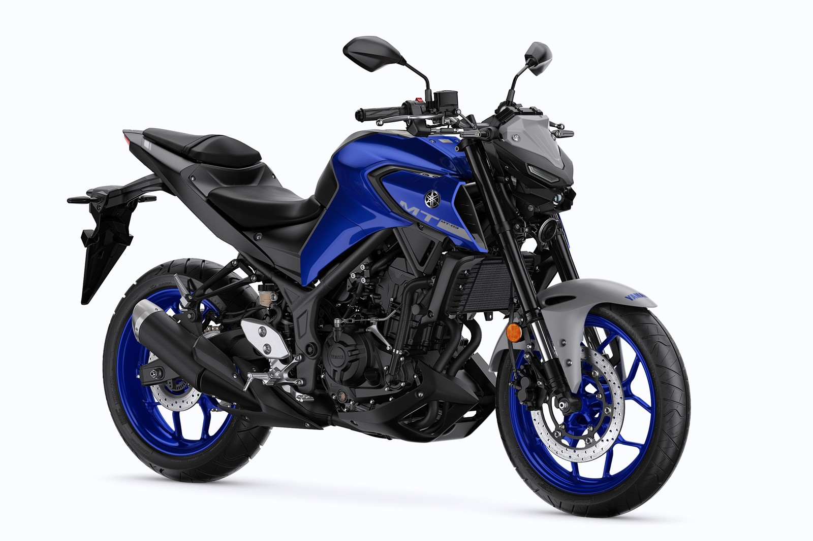

Productes Actuals
-Aprilia RS 660 2020
Cigonyal calat a 270º, de l'esportiva gran s'han agafat els seus conceptes tècnics i les seves mesures i s'han obtingut 100 CV en un motor més compacte i lleuger. Un alt valor de parell (encara no comunicat) i una electrònica de molt alt nivell, amb una fuita compacte i centrat asseguren una conducció dinàmica i eficaç, a el nivell d'unes sigles tan importants per a la marca com són "RS".

-Leoncino 800 2020
La Leoncino 800 utilitzarà el bicilíndric de 754cc refrigerat per aigua de 81,6 CV de potència a 9.000 rpm i 67 Nm de parell a 6.500 rpm. Aquest bloc treballa al costat d'una caixa de canvis de sis velocitats.

-Bimota Tesi H2 2020
Té un xassís Tesi modernitzat, components de primer ordre i un motor Kawasaki H2. No hi ha dades de quin nivell de potència portarà, perquè el propulsor pot superar els 300 CV, encara que el més lògic és pensar que estarà en xifres entre la H2 estàndard i una xifra assumible per a rodes "de carrer".

-Ducati Panigale V4
Un dels canvis que es poden apreciar a primera vista és que la V4 -i la V4 S- hereten diverses solucions que fins al moment eren exclusives de l'extrema Panigale V4 R. Per exemple, els apèndixs aerodinàmics. Però aquí no acaba la cosa perquè les versions 2020 afegeixen unes brànquies, una pantalla que ara és 15 mm més ampla per cada costat, així com uns carenats que creixen 38 mm per cada costat.
L'objectiu no és altre que millorar l'estabilitat de la moto a altes velocitats. Així les coses, els nous models són capaços de generar fins a 30 kg de càrrega a una velocitat de 270 km / h. En el seu conjunt, aquestes solucions augmenten l'estabilitat en la frenada abans d'atacar un revolt, així com en el vèrtex de la mateixa.

-Honda CBR 1000 RR-R Fireblade
S'ha mantingut l'estructura de motor quatre a línia associada històricament a la denominació CB. S'ha seguit un esquema de carrera curta, amb cotes internes idèntiques a les presents a la RC 213 VS (81x48,5 mm enfront dels 76x55 mm anteriors, és a dir, el diàmetre màxim permès en MotoGP), equipant bieles de titani (redueixen el pes un 50% respecte a les d'acer Cr-Mo), pistons d'alumini forjat i una extensa sèrie de solucions per reduir friccions internes.

-Kawasaki Ninja 650
La Kawasaki Ninja 650 prepara el seu motor per a les noves exigències Euro 5. Presenta un nou catalitzador més gran per netejar més profundament els gasos d'escapament. S'ha modificat per això tota la línia del tub d'escapament, atès que s'ha buscat a més una millor resposta en obertures a mig gas. En aquest mateix sentit, les preses d'admissió des de la caixa del filtre fins a les papallones s'han modificat. A la part cicle s'ha augmentat encara més la sensació de manejabilitat de la moto i per a això es munten ara uns nous pneumàtics Dunlop Sportmax Roadsport 2.

-KTM Duke 890R 2020
El xassís deriva del ja conegut Duke 790 , però com correspon a una "R" va acabat en taronja. S'han revisat geometries i s'ha buscat un comportament encara més esportiu. La resta de la part cicle també s'ha ajustat a aquesta faceta més radical: frens Brembo Stylema monobloc amb discos de 320 mm (300 a la 790) i suspensions WP Apex multiregulables davant i darrere, amb forquilla invertida de 43mm. Els pneumàtics, Michelin Powercup II també busquen aquestes majors capacitats "RR". Per si fos poc, la moto pesa 3 kilos menys que una 790: 166 kg en sec.

-RevoNEX
RevoNex , com indica el seu propi nom, serà una revolució en el món de la moto. Es tracta d'una naked sport amb capacitats reals i una tecnologia sorprenent: és capaç de rodar fins a 205 km / h , accelera de 0 a 100 km / h en 3,9 segons , amb potència contínua, però malgrat això empra un canvi de sis velocitats.

-MV Agusta Gamma Rosso
La gamma Rosso s'articula al voltant d'un únic propulsor. Parlem d'un tricilíndric en línia de 798cc, el qual desenvolupa una potència de 110 CV a 11.500 rpm i un parell màxim de 83 Nm a 7.600 rpm. Entre les seves principals característiques, disposa d'un cigonyal contrarrotativas inspirat en MotoGP i una caixa de canvis extraïble. Així mateix, la gestió del motor està controlada pel MVICS (Motor & Vehicle Integrated Control System), que gestiona tres configuracions diferents -Sport, Race i Rain- i la manera Custom. També farà ús de la caixa de canvis electrònica MV EAS 2.1 amb assistència per pujar i baixa de marxa. Per la seva banda, la Turismo Veloce 800 serà l'únic model en integrar una IMU.

-MT-03
La nova Yamaha MT-març 2020 segueix recorrent a les bicilíndric de 321 cc que comparteix amb l'esportiva R3, un motor amb pistons forjats i cilindres amb tractament DiASil, a l'estil de les grans esportives, capaç d'assolir els 42 CV a 10.750 rpm amb un parell de 29,6 Nm a 9.000 rpm, en aquest cas, les mateixes que a la Yamaha YZF-R3. S'ha modernitzat la carrosseria, acostant la seva imatge a la més agressiva i actual de les MT-09 d'última generació, amb un frontal més afilat i amb el nou far LED complementat per nous intermitents lleugers en la mateixa tecnologia. Amb diferents preses d'aire i dipòsit redissenyat. Les línies generals porten la massa de la moto cap endavant, afegint així més esportivitat. Un nou quadre, que continua sent de plasma, tanca el capítol de modificacions estètiques de la MT-03.
